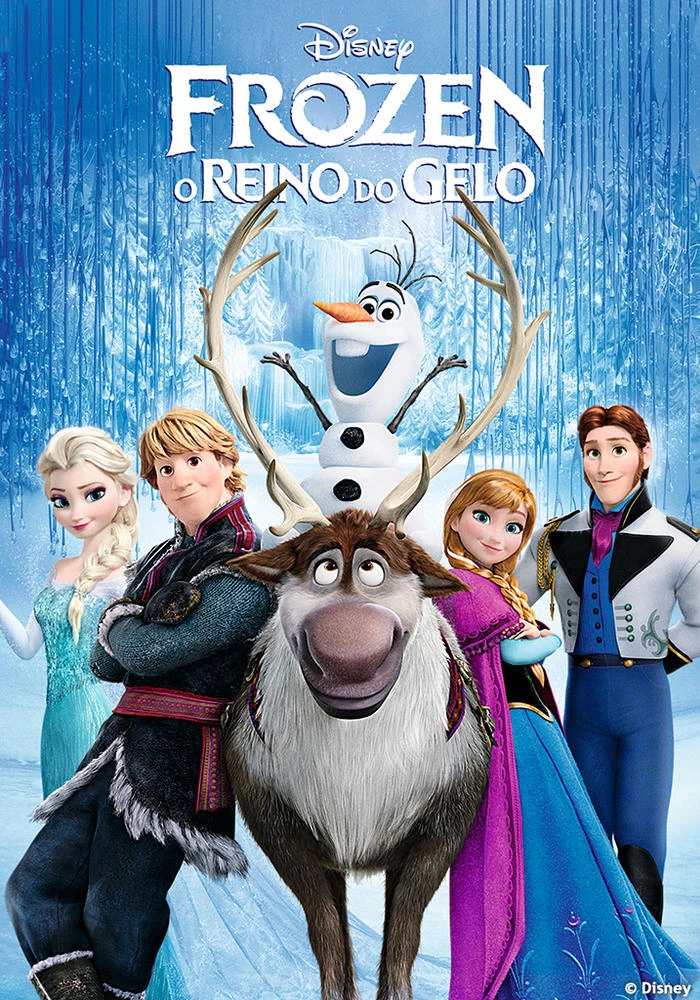

Frozen é o filme de duas irmãs, Elsa nasce com poderes mágicos de gelo e após acidentalmente congelar o reino e fugir Anna embarca em uma jornada com o camponês Kristoff e o boneco de neve Olaf, para encontrar sua irmã a rainha Elsa.
A jornada revela que o poder mais forte não é a magia do gelo, mas sim o amor entre as duas irmãs. Juntos Anna, Kristoff, Olaf provam que a lealdade e o sácrificio mútuo sõa as verdadeiras chaves para derreter o ineverno eterno e trazer a paz de volta a Arendelle.
o filme aborda os seguintes temas:
